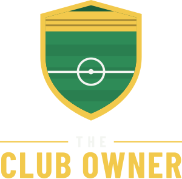

Data packs
Every club, league and cup in The Club Owner is fictional. A data pack is a small file that renames them: clubs (with short names, kit colours and ground names), leagues and cups, in England and all four countries abroad. Packs never change ratings, money or rules, and your own club always keeps the name you gave it.
Real clubs packs
European Football 2026/27 New
Every club in the game, in one pack: all six English tiers, including the National League North and South, plus the top two divisions in Spain, Italy, Germany and France. This season's line-ups, with kit colours, grounds and the real league and cup names.
European Football 2025/26: last season's clubs, every nation. Download the 2025/26 pack
England only: all six tiers. 2026/27 · 2025/26
Needs version 1.3 or later of the game.
Retro pack
English Football 1998/99 Retro
The treble season. Manchester City in the third tier, Fulham on the rise and Highbury, The Dell, Maine Road and Filbert Street still standing. With the First, Second and Third Divisions, the Worthington Cup, the Auto Windscreens Shield and all three European competitions, including the Cup Winners' Cup in its final season.
The Conference had 22 clubs then, so one fifth-tier club keeps its fictional name, as do the sixth-tier North and South.
Made by a fan and not affiliated with or endorsed by any club, league or competition. All names belong to their owners.
Installing a pack
- Save the pack's
.jsonfile to your iPhone (for example to the Files app). - In the game, tap Import pack: on the welcome screen when you start, or in Menu → Data packs.
- Choose the file. New games use the pack straight away. To rename the game you're already playing, tap Apply to this game.
With a pack, a new game puts your club in place of one of the pack's clubs in your starting division, chosen at random.
Making your own
The easiest way is Menu → Data packs → Export template. It saves every club, league and cup name in your current game as a pack; edit the names in any text editor, then import it. Packs made by other players can be shared the same way.
File format
{
"format": 2,
"name": "My pack",
"author": "Your name",
"leagues": ["Top league", "Second tier", "Third tier", "Fourth tier",
"Fifth tier", "Sixth tier north", "Sixth tier south"],
"leaguesAbroad": { "esp": ["Top", "Second"], "ita": ["Top", "Second"],
"ger": ["Top", "Second"], "fra": ["Top", "Second"] },
"cups": { "fa-cup": "My Cup", "cup-esp": "Spanish Cup" },
"clubs": [
{ "tier": 1, "name": "Club name", "shortName": "Short",
"primaryColour": "#C8102E", "secondaryColour": "#FFFFFF", "stadium": "Ground name" },
{ "tier": 6, "region": "North", "name": "Northern club" },
{ "nation": "esp", "tier": 1, "name": "Spanish club" }
]
}
| Field | Notes |
|---|---|
name | Required. Shown in the pack list. |
author | Optional. |
leagues | Optional. England's league names, top first, then the North and South (7 in all). Leave one blank to keep its name. Packs with 5 still work. |
leaguesAbroad | Optional. League names for esp, ita, ger and fra, top first. |
cups | Optional. Cup names by id: fa-cup (the main knockout cup), league-cup, efl-trophy (lower-league trophy), cup-esp, cup-ita, cup-ger, cup-fra (each country's cup), and champions-league, europa-league and conference-league (the three continental competitions, strongest first). |
clubs[].nation | Optional. eng (the default), esp, ita, ger or fra. |
clubs[].tier | 1 = that country's top division. England has 6 tiers, the others 2. |
clubs[].region | England tier 6 only: North or South. |
clubs[].name | Up to 40 characters, unique in the pack. |
shortName, primaryColour, secondaryColour, stadium | Optional. Colours look like #1B5E3B. |
List the strongest club in each tier first. The first club takes over the generated club with the biggest reputation, and so on. A tier can name up to as many clubs as its division (England 20, then 24 in each of the others; Spain 20 and 22; Italy 20 and 20; Germany and France 18 and 18); the rest keep their names. Older format 1 packs still work. Comments and trailing commas are allowed.